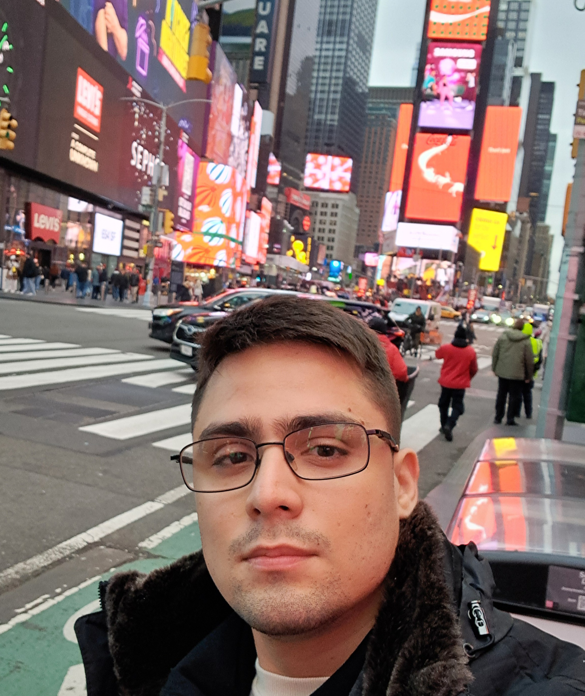

Sites profissionais prontos em até 1 dia
Falar no WhatsApp
coloque um arquivo
minha-foto.jpg
nesta mesma pasta
minha-foto.jpg
nesta mesma pasta
toque para descobrir
MG
WEB DESIGN · CONSULTORIA DE CRESCIMENTO
BELÉM — PARÁDISPONÍVEL PARA PROJETOS